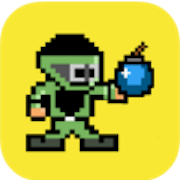
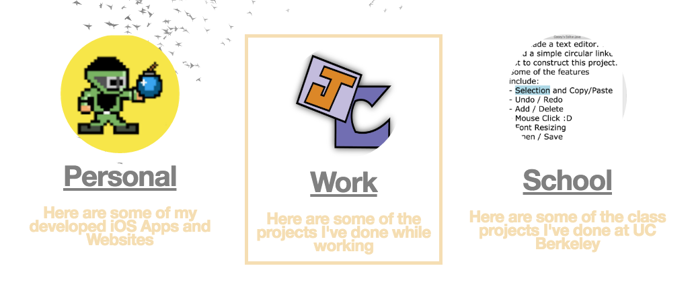
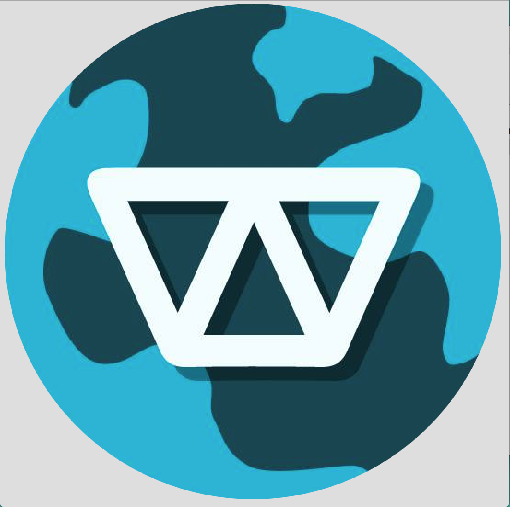
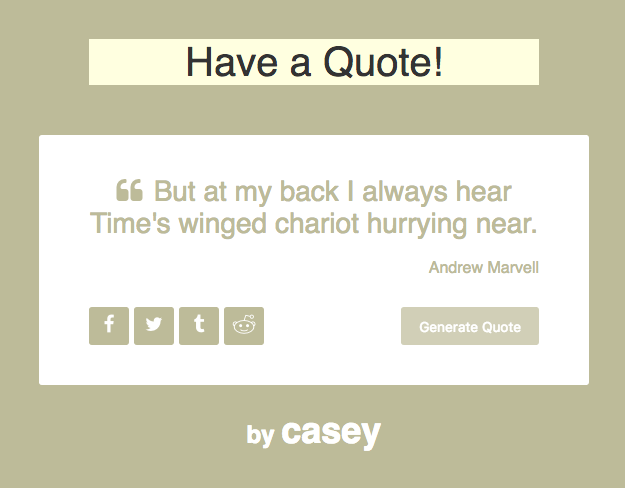
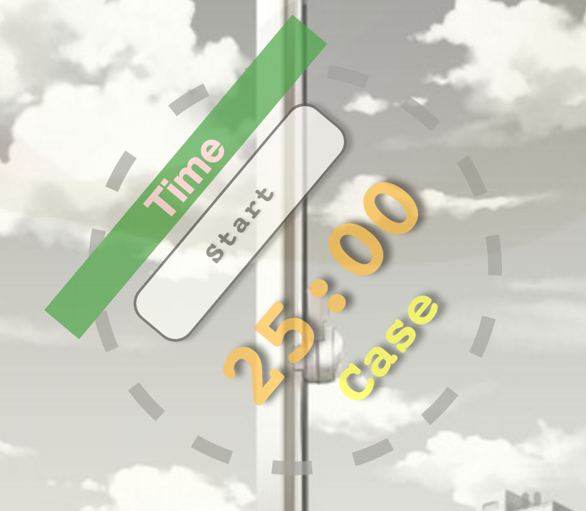
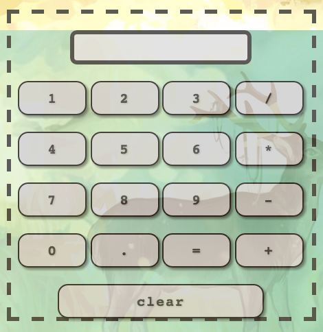

Personal Projects

Tapstr
Just Released!
Tapstr is a game aimed to test a player's reaction skills and hand eye coordinations. The Indie game was inspired by Twister as the user uses four fingers to defuse bombs!
In Progress: Version 1.0

Current Portfolio
Updating in progress!
I had a lot of inspiration from other fellow web developers and thought of a pleasing UI/UX interface for my current personal / portfolio website. It's still updating and I hope to add more features soon!
Website created with HTML/CSS/Canvas.js. No Bootstrap imports / frameworks.
Website created with HTML/CSS/Canvas.js. No Bootstrap imports / frameworks.
Original Portfolio
April 2016
I created a different personal / portfolio website before. I also made a wikipedia google search engine on that website. My current website actually uses a similar template, which I found more aesthetically pleasing to the eye. Throughout my web developing experiences, I realized that my main passion is geared towards creating software and mobile applications rather than designing websites. Though, I do spend some of my free time learning new ways using HTML / CSS and I prefer Back-End Development.

Wake Up World
March 2016
My team (shoutout to Ken Chen and Vanessa Ng) and I were at The Big Hack 2016 from April 8th - April 9th. We built an app based on the prompt provided by a non-profit organization known as Watsi. Check out the proposed challenge here
We were very excited and inspired by Watsi's mission to give back to the world through donations, and created a mobile app called "Wake Up, World!" Wake Up World was compiled through Xcode and is in a language of Swift2. Graphics are designed using Adobe Illustrator.

Quote Machine
Feburary 2016
I like quotes and literacy. Poems and stories are some of the other cool things I personally love. Naturally, I would love quotes because simple words have strong influences towards others... And a quote could sum up something deep in such short sentences.
So, I made a random quote machine through a Json Parser!
Created using Html/Css/Angular.js
So, I made a random quote machine through a Json Parser!
Created using Html/Css/Angular.js

Animated Pomodoro
December 2015
Inspired by the Pomodoro Technique, I made my own website that resembles a Pomodoro time management system (Of course, I kinda tried to make it stylish... but I hope it looks bright and cool?).
This time management technique uses a timer to alternate between intervals of work and intervals of rest. The user can also customize the length of each Pomodoro.
Created using Html/Css/Angular.js
This time management technique uses a timer to alternate between intervals of work and intervals of rest. The user can also customize the length of each Pomodoro.
Created using Html/Css/Angular.js

Javascript Calculator
November 2015
Math is a pretty cool subject, at least to me it is! So I made a simple calculator that can add, subtract, multiply and divide two numbers. I was also motivated by the aesthetics of nature and wanted to incorporate a forest like setting to my calculator. (I guess that's where the style came from?)
Created with Html/Css/jQuery
Created with Html/Css/jQuery